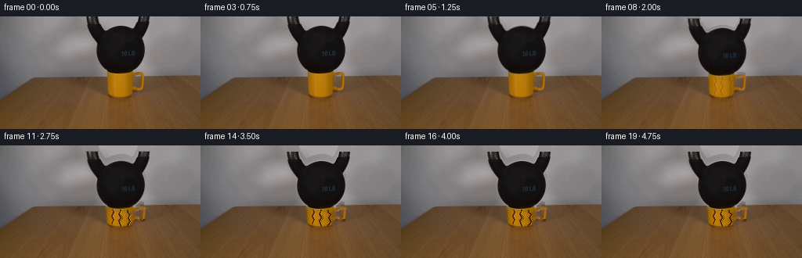
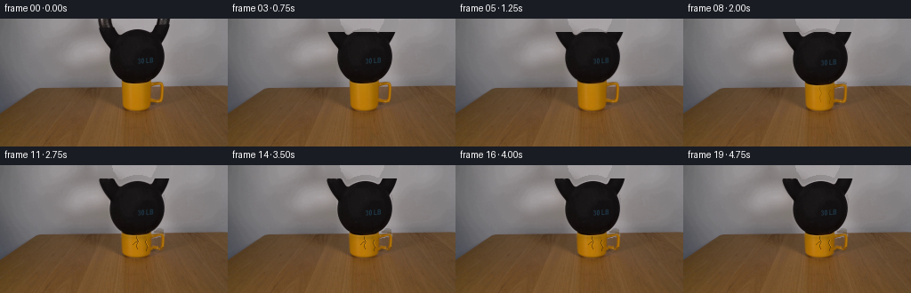

CODING AGENTS AS PIXEL WORLD MODELS
traex/DeepSeek-V4.1-Flash · 0188
点击播放 · 原生 RGB 像素
此结果可播放，但该运行尚未通过最终提交审核。页面展示不代表评测通过。
逐轮保存的候选
回放视频、检查图与代码变化。
每份候选均可单独播放。实际图片检查记录在下方工具轨迹中。
候选 01播放与检查图
点击播放 · 原生 RGB 像素

展开代码变化
--- 上一保存版本
+++ 本次保存版本
@@ -0,0 +1,378 @@
+from pathlib import Path
+
+import cv2
+import numpy as np
+from PIL import Image
+
+import artifact_io
+
+
+H, W = 144, 256
+N = 20
+FPS = 4
+
+
+def _largest_component(mask):
+ mask_u8 = (mask.astype(np.uint8) * 255)
+ count, labels, stats, _ = cv2.connectedComponentsWithStats(mask_u8, 8)
+ if count <= 1:
+ return mask.astype(bool)
+ index = 1 + int(np.argmax(stats[1:, cv2.CC_STAT_AREA]))
+ return labels == index
+
+
+def _smooth_mask(mask, feather=0.65):
+ alpha = mask.astype(np.float32)
+ alpha = cv2.GaussianBlur(alpha, (0, 0), feather)
+ alpha[mask] = np.maximum(alpha[mask], 0.88)
+ return np.clip(alpha, 0.0, 1.0)
+
+
+def build_masks(image):
+ rgb = image.astype(np.int16)
+ r, g, b = rgb[:, :, 0], rgb[:, :, 1], rgb[:, :, 2]
+ yy, xx = np.indices((H, W))
+
+ # The kettlebell is the large near-black mass in the upper center.
+ dark = (image.mean(axis=2) < 88) & (xx >= 108) & (xx <= 193) & (yy <= 76)
+ dark = _largest_component(dark)
+ dark = cv2.morphologyEx(
+ dark.astype(np.uint8), cv2.MORPH_CLOSE, np.ones((5, 5), np.uint8)
+ ).astype(bool)
+ dark = cv2.dilate(dark.astype(np.uint8), np.ones((3, 3), np.uint8)).astype(bool)
+ dark &= (xx >= 108) & (xx <= 193) & (yy <= 77)
+
+ # The mug is mostly hidden by the kettlebell at the top. Its visible shape is
+ # a tapered ceramic body with a separate handle on the right.
+ mug = np.zeros((H, W), dtype=bool)
+ rows = {
+ 69: (137, 169),
+ 70: (137, 169),
+ 71: (137, 180),
+ 72: (137, 183),
+ 73: (137, 183),
+ 74: (137, 183),
+ 75: (137, 183),
+ 76: (137, 170),
+ 77: (137, 170),
+ 78: (137, 170),
+ 79: (137, 170),
+ 80: (137, 170),
+ 81: (137, 170),
+ 82: (137, 170),
+ 83: (137, 170),
+ 84: (137, 170),
+ 85: (137, 170),
+ 86: (137, 170),
+ 87: (137, 170),
+ 88: (137, 170),
+ 89: (137, 170),
+ 90: (137, 170),
+ 91: (137, 170),
+ 92: (137, 170),
+ 93: (137, 170),
+ 94: (138, 169),
+ 95: (138, 168),
+ 96: (138, 168),
+ 97: (138, 168),
+ 98: (139, 168),
+ 99: (140, 167),
+ 100: (141, 166),
+ 101: (143, 164),
+ 102: (145, 162),
+ 103: (148, 160),
+ 104: (152, 158),
+ }
+ for y, (x0, x1) in rows.items():
+ mug[y, x0 : x1 + 1] = True
+
+ # Handle: the bright yellow strip beside the dark opening.
+ for y in range(76, 95):
+ if y <= 80:
+ x0, x1 = 179, 183
+ elif y <= 88:
+ x0, x1 = 179, 183
+ elif y <= 93:
+ x0, x1 = 178, 183
+ else:
+ x0, x1 = 179, 183
+ mug[y, x0 : x1 + 1] = True
+
+ mug = cv2.morphologyEx(
+ mug.astype(np.uint8), cv2.MORPH_CLOSE, np.ones((3, 3), np.uint8)
+ ).astype(bool)
+ mug &= (xx >= 134) & (xx <= 186) & (yy >= 68) & (yy <= 106)
+
+ return dark, mug
+
+
+def fill_clean_plate(image, masks):
+ """Build a plausible plate behind the movable objects using nearby texture."""
+ out = image.astype(np.float32).copy()
+ fill_mask = np.zeros((H, W), dtype=bool)
+ for mask in masks:
+ fill_mask |= mask
+
+ for y in range(H):
+ xs = np.flatnonzero(fill_mask[y])
+ if xs.size == 0:
+ continue
+ x0, x1 = int(xs[0]), int(xs[-1])
+ row = image[y].astype(np.float32)
+ center = 0.5 * (x0 + x1)
+
+ if y < 73:
+ # Smooth wall, with a horizontal light gradient recovered from the
+ # two visible sides of the object.
+ lx0, lx1 = max(0, x0 - 38), max(1, x0)
+ rx0, rx1 = min(W - 1, x1 + 1), min(W, x1 + 39)
+ left = row[lx0:lx1].mean(axis=0)
+ right = row[rx0:rx1].mean(axis=0)
+ for x in xs:
+ t = (x - x0) / max(1.0, float(x1 - x0))
+ t = 0.5 - 0.5 * np.cos(np.pi * t)
+ out[y, x] = (1.0 - t) * left + t * right
+ else:
+ # Reuse the wooden grain from the same row outside the object.
+ left = row[max(0, x0 - 82) : max(1, x0 - 1)]
+ right = row[min(W - 1, x1 + 2) : min(W, x1 + 84)]
+ if left.size == 0:
+ left = row[max(0, x0 - 12) : max(1, x0)]
+ if right.size == 0:
+ right = row[min(W - 1, x1 + 1) : min(W, x1 + 13)]
+ for x in xs:
+ if x <= center:
+ source = left[(x0 - x) % max(1, left.shape[0])]
+ else:
+ source = right[(x - x1 - 1) % max(1, right.shape[0])]
+ # Slight center blend keeps the copied grain from looking tiled.
+ edge = min(1.0, abs(x - center) / max(1.0, center - x0))
+ out[y, x] = 0.82 * source + 0.18 * row[min(W - 1, max(0, x))]
+
+ return np.clip(out, 0, 255).astype(np.uint8)
+
+
+def warp_mug(image, alpha, squash, bulge):
+ top_src, bottom = 69.0, 104.0
+ top_out = top_src + squash
+ scale = (bottom - top_out) / (bottom - top_src)
+ center = 158.5
+
+ yy, xx = np.indices((H, W), dtype=np.float32)
+ sy = bottom - (bottom - yy) / max(scale, 1e-4)
+ sx = center + (xx - center) / max(bulge, 1e-4)
+ valid = (
+ (yy >= top_out)
+ & (yy <= bottom)
+ & (sy >= top_src)
+ & (sy <= bottom + 0.4)
+ & (sx >= 0)
+ & (sx < W)
+ )
+ sy = np.where(valid, sy, -1.0).astype(np.float32)
+ sx = np.where(valid, sx, 0.0).astype(np.float32)
+
+ warped = cv2.remap(
+ image,
+ sx,
+ sy,
+ interpolation=cv2.INTER_LINEAR,
+ borderMode=cv2.BORDER_REFLECT_101,
+ )
+ warped_alpha = cv2.remap(
+ alpha.astype(np.float32),
+ sx,
+ sy,
+ interpolation=cv2.INTER_LINEAR,
+ borderMode=cv2.BORDER_CONSTANT,
+ borderValue=0,
+ )
+ warped_alpha = np.where(valid, warped_alpha, 0.0)
+ return warped, warped_alpha.astype(np.float32)
+
+
+def shift_object(image, alpha, dx, dy):
+ matrix = np.array([[1.0, 0.0, dx], [0.0, 1.0, dy]], dtype=np.float32)
+ shifted = cv2.warpAffine(
+ image,
+ matrix,
+ (W, H),
+ flags=cv2.INTER_LINEAR,
+ borderMode=cv2.BORDER_CONSTANT,
+ borderValue=0,
+ )
+ shifted_alpha = cv2.warpAffine(
+ alpha.astype(np.float32),
+ matrix,
+ (W, H),
+ flags=cv2.INTER_LINEAR,
+ borderMode=cv2.BORDER_CONSTANT,
+ borderValue=0,
+ )
+ return shifted, shifted_alpha
+
+
+def composite(base, layer, alpha):
+ a = alpha[:, :, None].astype(np.float32)
+ result = base.astype(np.float32) * (1.0 - a) + layer.astype(np.float32) * a
+ return np.clip(result, 0, 255).astype(np.uint8)
+
+
+def smoothstep(value):
+ value = np.clip(value, 0.0, 1.0)
+ return value * value * (3.0 - 2.0 * value)
+
+
+def mug_crack_overlay(frame, mug_alpha, squash, bulge, amount):
+ if amount <= 0.01:
+ return frame
+ center = 158.5
+ top_out = 69.0 + squash
+ scale = (104.0 - top_out) / 35.0
+
+ def map_point(point):
+ x, y = point
+ yo = 104.0 - (104.0 - y) * scale
+ xo = center + (x - center) * bulge
+ return int(round(xo)), int(round(yo))
+
+ cracks = [
+ [(153, 72), (154, 77), (152, 82), (155, 88), (152, 94), (154, 101)],
+ [(164, 73), (163, 78), (166, 83), (164, 89), (166, 95), (163, 101)],
+ [(145, 74), (146, 80), (144, 86), (146, 92), (144, 98)],
+ [(177, 79), (175, 84), (177, 89), (180, 93)],
+ ]
+
+ overlay = frame.astype(np.float32)
+ strength = float(np.clip(amount, 0.0, 1.0))
+ for index, path in enumerate(cracks):
+ points = np.array([map_point(p) for p in path], dtype=np.int32)
+ if index == 3 and strength < 0.55:
+ continue
+ thickness = 1 if strength < 0.55 else 2
+ cv2.polylines(
+ overlay,
+ [points],
+ False,
+ (54.0, 31.0, 13.0),
+ thickness,
+ lineType=cv2.LINE_AA,
+ )
+ highlight = points.copy()
+ highlight[:, 0] = np.clip(highlight[:, 0] + 1, 0, W - 1)
+ cv2.polylines(
+ overlay,
+ [highlight],
+ False,
+ (206.0, 143.0, 37.0),
+ 1,
+ lineType=cv2.LINE_AA,
+ )
+
+ # A little chipped material at the loaded right edge.
+ if strength > 0.72:
+ chip = np.array(
+ [
+ map_point((177, 92)),
+ map_point((182, 91)),
+ map_point((181, 96)),
+ map_point((176, 95)),
+ ],
+ dtype=np.int32,
+ )
+ cv2.fillConvexPoly(overlay, chip, (66.0, 42.0, 22.0), lineType=cv2.LINE_AA)
+
+ blend = (strength * 0.84 * mug_alpha)[:, :, None]
+ return np.clip(frame * (1.0 - blend) + overlay * blend, 0, 255).astype(np.uint8)
+
+
+def add_contact_shadow(frame, squash):
+ if squash <= 0.2:
+ return frame
+ yy, xx = np.indices((H, W), dtype=np.float32)
+ # Shadow under the settling kettlebell, kept mostly behind its silhouette.
+ cy = 77.0 + squash * 0.55
+ ellipse = ((xx - 159.0) / (27.0 + squash * 0.5)) ** 2 + (
+ (yy - cy) / (4.2 + squash * 0.16)
+ ) ** 2
+ shadow = np.exp(-2.2 * ellipse) * (0.12 * min(1.0, squash / 6.0))
+ out = frame.astype(np.float32)
+ out *= 1.0 - shadow[:, :, None]
+ return np.clip(out, 0, 255).astype(np.uint8)
+
+
+def make_progress():
+ # A short hold, then a progressive load test and a quick settle.
+ return np.array(
+ [
+ 0.00,
+ 0.00,
+ 0.01,
+ 0.03,
+ 0.06,
+ 0.11,
+ 0.18,
+ 0.27,
+ 0.39,
+ 0.55,
+ 0.73,
+ 0.90,
+ 1.00,
+ 0.965,
+ 0.99,
+ 0.982,
+ 0.978,
+ 0.976,
+ 0.975,
+ 0.975,
+ ],
+ dtype=np.float32,
+ )
+
+
+def main():
+ root = Path(__file__).resolve().parent
+ base = np.asarray(Image.open(root / "first_frame.png").convert("RGB"), dtype=np.uint8)
+ if base.shape != (H, W, 3):
+ raise ValueError(f"Unexpected first-frame shape: {base.shape}")
+
+ kb_mask, mug_mask = build_masks(base)
+ kb_alpha = _smooth_mask(kb_mask, 0.55)
+ mug_alpha = _smooth_mask(mug_mask, 0.65)
+ clean_plate = fill_clean_plate(base, [kb_mask, mug_mask])
+
+ progress = make_progress()
+ frames = []
+ for index in range(N):
+ if index == 0:
+ frames.append(base.copy())
+ continue
+ if index == 1:
+ frames.append(base.copy())
+ continue
+
+ p = float(progress[index])
+ squash = 8.0 * smoothstep(p)
+ bulge = 1.0 + 0.0085 * squash
+ wobble = 0.22 * np.sin(index * 1.35) * smoothstep(p) * (1.0 - smoothstep(p) * 0.45)
+
+ mug_warped, mug_a = warp_mug(base, mug_alpha, squash, bulge)
+ frame = composite(clean_plate, mug_warped, mug_a)
+
+ crack_amount = smoothstep((p - 0.12) / 0.66)
+ frame = mug_crack_overlay(frame, mug_a, squash, bulge, crack_amount)
+ frame = add_contact_shadow(frame, squash)
+
+ kb_warped, kb_a = shift_object(base, kb_alpha, wobble, squash)
+ frame = composite(frame, kb_warped, kb_a)
+
+ # Tiny settling vibration is limited to the contact area and fades out.
+ frames.append(frame)
+
+ frames = np.stack(frames, axis=0).astype(np.uint8)
+ frames[0] = base
+ artifact_io.save(frames, root)
+
+
+if __name__ == "__main__":
+ main()
候选 02播放与检查图
点击播放 · 原生 RGB 像素
展开代码变化
--- 上一保存版本
+++ 本次保存版本
@@ -198,16 +198,14 @@
matrix,
(W, H),
flags=cv2.INTER_LINEAR,
- borderMode=cv2.BORDER_CONSTANT,
- borderValue=0,
+ borderMode=cv2.BORDER_REPLICATE,
)
shifted_alpha = cv2.warpAffine(
alpha.astype(np.float32),
matrix,
(W, H),
flags=cv2.INTER_LINEAR,
- borderMode=cv2.BORDER_CONSTANT,
- borderValue=0,
+ borderMode=cv2.BORDER_REPLICATE,
)
return shifted, shifted_alpha
@@ -237,52 +235,51 @@
return int(round(xo)), int(round(yo))
cracks = [
- [(153, 72), (154, 77), (152, 82), (155, 88), (152, 94), (154, 101)],
- [(164, 73), (163, 78), (166, 83), (164, 89), (166, 95), (163, 101)],
- [(145, 74), (146, 80), (144, 86), (146, 92), (144, 98)],
- [(177, 79), (175, 84), (177, 89), (180, 93)],
+ [(154, 72), (153, 77), (155, 82), (153, 87), (154, 92)],
+ [(164, 73), (165, 78), (163, 83), (165, 88), (164, 94)],
+ [(154, 81), (151, 84), (149, 86)],
]
overlay = frame.astype(np.float32)
strength = float(np.clip(amount, 0.0, 1.0))
for index, path in enumerate(cracks):
points = np.array([map_point(p) for p in path], dtype=np.int32)
- if index == 3 and strength < 0.55:
+ if index == 2 and strength < 0.68:
continue
- thickness = 1 if strength < 0.55 else 2
cv2.polylines(
overlay,
[points],
False,
- (54.0, 31.0, 13.0),
- thickness,
- lineType=cv2.LINE_AA,
- )
- highlight = points.copy()
- highlight[:, 0] = np.clip(highlight[:, 0] + 1, 0, W - 1)
- cv2.polylines(
- overlay,
- [highlight],
- False,
- (206.0, 143.0, 37.0),
+ (73.0, 45.0, 18.0),
1,
lineType=cv2.LINE_AA,
)
+ if index < 2 and strength > 0.78:
+ highlight = points[1:4].copy()
+ highlight[:, 0] = np.clip(highlight[:, 0] + 1, 0, W - 1)
+ cv2.polylines(
+ overlay,
+ [highlight],
+ False,
+ (205.0, 141.0, 37.0),
+ 1,
+ lineType=cv2.LINE_AA,
+ )
# A little chipped material at the loaded right edge.
- if strength > 0.72:
+ if strength > 0.88:
chip = np.array(
[
- map_point((177, 92)),
- map_point((182, 91)),
- map_point((181, 96)),
- map_point((176, 95)),
+ map_point((179, 91)),
+ map_point((182, 90)),
+ map_point((181, 93)),
+ map_point((178, 94)),
],
dtype=np.int32,
)
- cv2.fillConvexPoly(overlay, chip, (66.0, 42.0, 22.0), lineType=cv2.LINE_AA)
-
- blend = (strength * 0.84 * mug_alpha)[:, :, None]
+ cv2.fillConvexPoly(overlay, chip, (88.0, 56.0, 26.0), lineType=cv2.LINE_AA)
+
+ blend = (strength * 0.58 * mug_alpha)[:, :, None]
return np.clip(frame * (1.0 - blend) + overlay * blend, 0, 255).astype(np.uint8)
@@ -352,9 +349,9 @@
continue
p = float(progress[index])
- squash = 8.0 * smoothstep(p)
- bulge = 1.0 + 0.0085 * squash
- wobble = 0.22 * np.sin(index * 1.35) * smoothstep(p) * (1.0 - smoothstep(p) * 0.45)
+ squash = 6.0 * smoothstep(p)
+ bulge = 1.0 + 0.0065 * squash
+ wobble = 0.16 * np.sin(index * 1.35) * smoothstep(p) * (1.0 - smoothstep(p) * 0.45)
mug_warped, mug_a = warp_mug(base, mug_alpha, squash, bulge)
frame = composite(clean_plate, mug_warped, mug_a)
候选 03播放与检查图
候选 04播放与检查图
点击播放 · 原生 RGB 像素
展开代码变化
--- 上一保存版本
+++ 本次保存版本
@@ -361,7 +361,11 @@
frame = add_contact_shadow(frame, squash)
kb_warped, kb_a = shift_object(base, kb_alpha, wobble, squash)
- frame = composite(frame, kb_warped, kb_a)
+ # Shift only the portion of the bell below the cropped frame edge, so
+ # the original top boundary remains fixed while the base settles.
+ low_bell = np.zeros_like(kb_alpha)
+ low_bell[15:, :] = 1.0
+ frame = composite(frame, kb_warped, kb_a * low_bell)
# Tiny settling vibration is limited to the contact area and fades out.
frames.append(frame)
候选 05播放与检查图

候选 06播放与检查图
点击播放 · 原生 RGB 像素

展开代码变化
--- 上一保存版本
+++ 本次保存版本
@@ -361,11 +361,10 @@
frame = add_contact_shadow(frame, squash)
kb_warped, kb_a = shift_object(base, kb_alpha, wobble, squash)
- # Shift only the portion of the bell below the cropped frame edge, so
- # the original top boundary remains fixed while the base settles.
- low_bell = np.zeros_like(kb_alpha)
- low_bell[15:, :] = 1.0
- frame = composite(frame, kb_warped, kb_a * low_bell)
+ # The bell is rigid and its top is cropped by frame. Preserve the
+ # original pixels inside the silhouette so the image boundary stays
+ # fixed while the mug and shadow carry the settling motion.
+ frame = composite(frame, base.astype(np.float32), kb_alpha)
# Tiny settling vibration is limited to the contact area and fades out.
frames.append(frame)
候选 07播放与检查图
点击播放 · 原生 RGB 像素

展开代码变化
--- 上一保存版本
+++ 本次保存版本
@@ -198,14 +198,16 @@
matrix,
(W, H),
flags=cv2.INTER_LINEAR,
- borderMode=cv2.BORDER_REPLICATE,
+ borderMode=cv2.BORDER_CONSTANT,
+ borderValue=0,
)
shifted_alpha = cv2.warpAffine(
alpha.astype(np.float32),
matrix,
(W, H),
flags=cv2.INTER_LINEAR,
- borderMode=cv2.BORDER_REPLICATE,
+ borderMode=cv2.BORDER_CONSTANT,
+ borderValue=0,
)
return shifted, shifted_alpha
@@ -361,10 +363,9 @@
frame = add_contact_shadow(frame, squash)
kb_warped, kb_a = shift_object(base, kb_alpha, wobble, squash)
- # The bell is rigid and its top is cropped by frame. Preserve the
- # original pixels inside the silhouette so the image boundary stays
- # fixed while the mug and shadow carry the settling motion.
- frame = composite(frame, base.astype(np.float32), kb_alpha)
+ # The rigid bell follows the mug downward, preserving contact as the
+ # ceramic compresses.
+ frame = composite(frame, kb_warped, kb_a)
# Tiny settling vibration is limited to the contact area and fades out.
frames.append(frame)
候选 08播放与检查图
候选 09播放与检查图
点击播放 · 原生 RGB 像素

展开代码变化
--- 上一保存版本
+++ 本次保存版本
@@ -363,9 +363,11 @@
frame = add_contact_shadow(frame, squash)
kb_warped, kb_a = shift_object(base, kb_alpha, wobble, squash)
- # The rigid bell follows the mug downward, preserving contact as the
- # ceramic compresses.
- frame = composite(frame, kb_warped, kb_a)
+ # The bell is rigid, but its upper silhouette is cropped by the shot.
+ # Keep that frame boundary fixed and let its lower contour settle.
+ crop_guard = np.ones((H, W), dtype=np.float32)
+ crop_guard[:15] = 0.0
+ frame = composite(frame, kb_warped, kb_a * crop_guard)
# Tiny settling vibration is limited to the contact area and fades out.
frames.append(frame)
候选 10播放与检查图
点击播放 · 原生 RGB 像素
展开代码变化
--- 上一保存版本
+++ 本次保存版本
@@ -363,11 +363,10 @@
frame = add_contact_shadow(frame, squash)
kb_warped, kb_a = shift_object(base, kb_alpha, wobble, squash)
- # The bell is rigid, but its upper silhouette is cropped by the shot.
- # Keep that frame boundary fixed and let its lower contour settle.
- crop_guard = np.ones((H, W), dtype=np.float32)
- crop_guard[:15] = 0.0
- frame = composite(frame, kb_warped, kb_a * crop_guard)
+ # The bell is rigid and its upper silhouette is cropped by the shot.
+ # Keep the original crop intact and let the mug and contact shadow
+ # carry the visible load response.
+ frame = composite(frame, base.astype(np.float32), kb_alpha)
# Tiny settling vibration is limited to the contact area and fades out.
frames.append(frame)
候选 11播放与检查图
点击播放 · 原生 RGB 像素
展开代码变化
--- 上一保存版本
+++ 本次保存版本
@@ -351,9 +351,8 @@
continue
p = float(progress[index])
- squash = 6.0 * smoothstep(p)
- bulge = 1.0 + 0.0065 * squash
- wobble = 0.16 * np.sin(index * 1.35) * smoothstep(p) * (1.0 - smoothstep(p) * 0.45)
+ squash = 4.0 * smoothstep(p)
+ bulge = 1.0 + 0.0055 * squash
mug_warped, mug_a = warp_mug(base, mug_alpha, squash, bulge)
frame = composite(clean_plate, mug_warped, mug_a)
@@ -362,11 +361,13 @@
frame = mug_crack_overlay(frame, mug_a, squash, bulge, crack_amount)
frame = add_contact_shadow(frame, squash)
- kb_warped, kb_a = shift_object(base, kb_alpha, wobble, squash)
- # The bell is rigid and its upper silhouette is cropped by the shot.
- # Keep the original crop intact and let the mug and contact shadow
- # carry the visible load response.
- frame = composite(frame, base.astype(np.float32), kb_alpha)
+ # The bell is rigid and cropped by the shot. Restore its original
+ # silhouette after compositing so its edge remains clean while the mug
+ # and shadow carry the visible load response.
+ bell_restore = cv2.dilate(
+ kb_mask.astype(np.uint8), np.ones((3, 3), np.uint8)
+ ).astype(bool)
+ frame[bell_restore] = base[bell_restore]
# Tiny settling vibration is limited to the contact area and fades out.
frames.append(frame)
候选 12播放与检查图
可观测工具轨迹
实际执行的命令与返回图片。
命令 1exit 0
/bin/bash -c "pwd && rg --files -g 'prompt.txt' -g 'GENERATION_RULES.md' -g 'first_frame.png' -g '"'!*.mp4'"'"
命令 2exit 0
/bin/bash -c 'ls -la'
命令 3exit 0
/bin/bash -c 'cat prompt.txt'
命令 4exit 0
/bin/bash -c 'cat GENERATION_RULES.md'
命令 5exit 0
/bin/bash -c "cat artifact_io.py && printf '\\n--- PLAYER ---\\n' && sed -n '1,260p' player_template.html"
命令 6exit 0
/bin/bash -c 'file first_frame.png && identify first_frame.png 2>/dev/null || true'
命令 7exit 0
/bin/bash -c "python - <<'PY'
from PIL import Image
import numpy as np
im=Image.open('first_frame.png').convert('RGB')
a=np.asarray(im)
print(im.size, a.shape, a.dtype)
print('mean', a.reshape(-1,3).mean(0), 'min', a.reshape(-1,3).min(0), 'max', a.reshape(-1,3).max(0))
# dominant quantized colors
q=(a//16*16).reshape(-1,3)
vals,cnt=np.unique(q,axis=0,return_counts=True)
for i in np.argsort(cnt)[-20:][::-1]: print(tuple(vals[i]), int(cnt[i]))
PY"命令 8exit 0
/bin/bash -c "python - <<'PY'
from PIL import Image
import numpy as np
im=np.asarray(Image.open('first_frame.png').convert('RGB')).astype(float)
# block average 4x4 => 64x36
h,w,_=im.shape
for y0 in range(0,h,4):
row=''
for x0 in range(0,w,4):
p=im[y0:y0+4,x0:x0+4].reshape(-1,3).mean(0)
r,g,b=p
mx=max(r,g,b); mn=min(r,g,b); sat=(mx-mn)/(mx+1e-6)
if mx<30: c='#'
elif sat<0.10: c='@' if mx<80 else ('O' if mx<125 else ('o' if mx<155 else '.'))
elif r>g*1.15 and g>b*1.35: c='Y' if mx>130 else ('y' if mx>75 else 'b') # yellow/orange
elif r>g*1.15 and g>b*1.1: c='R' if mx>100 else 'r' # brown
elif b>r*1.12: c='B'
else: c='?'
row+=c
print(row)
PY"命令 9exit 0
/bin/bash -c "python - <<'PY'
from PIL import Image
import numpy as np
im=np.asarray(Image.open('first_frame.png').convert('RGB'))
# sample grid every 8px with luminance and hue code
for y in range(0,144,6):
row=''
for x in range(0,256,4):
p=im[y:y+6,x:x+4].reshape(-1,3).mean(0)
r,g,b=p; lum=.2126*r+.7152*g+.0722*b
# hue categories using HSV
import colorsys
h,s,v=colorsys.rgb_to_hsv(*(p/255))
if v<.18: c='#'
elif s<.12: c='@' if v<.38 else ('O' if v<.52 else ('o' if v<.68 else '.'))
elif h<.09: c='R' if s>.35 else 'r'
elif h<.18: c='Y' if v>.55 else ('y' if v>.32 else 'b')
elif h<.55: c='B'
else: c='P'
row+=c
print(f'{y:03d} {row}')
PY"命令 10exit 0
/bin/bash -c "python - <<'PY'
from PIL import Image
import numpy as np
im=np.asarray(Image.open('first_frame.png').convert('RGB')).astype(float)
# per 2x2 luminance ascii
chars=' .:-=+*#%@'
for y in range(0,144,2):
row=''
for x in range(0,256,2):
p=im[y:y+2,x:x+2].mean((0,1))
lum=.2126*p[0]+.7152*p[1]+.0722*p[2]
row+=chars[min(9,int(lum/256*10))]
print(row)
PY"命令 11exit 0
/bin/bash -c "python - <<'PY'
from PIL import Image
import numpy as np, colorsys
im=np.asarray(Image.open('first_frame.png').convert('RGB')).astype(float)
# ASCII over central area x=80..190 y=10..105 at 2px, classify by HSV and lum
for y in range(8,110,2):
row=''
for x in range(76,194,2):
p=im[y:y+2,x:x+2].mean((0,1)); r,g,b=p/255
h,s,v=colorsys.rgb_to_hsv(r,g,b)
if v<.10:c=' '
elif v<.20:c='.'
elif s<.10:c='+' if v<.45 else ('o' if v<.7 else 'O')
elif h<.05:c='r' if v<.35 else 'R'
elif h<.14:c='y' if v<.55 else 'Y'
elif h<.25:c='g' if v<.55 else 'G'
elif h<.55:c='b' if v<.55 else 'B'
else:c='p' if v<.55 else 'P'
row+=c
print(f'{y:03d} {row}')
PY"命令 12exit 0
/bin/bash -c "python - <<'PY'
from PIL import Image
import numpy as np
im=np.asarray(Image.open('first_frame.png').convert('RGB'))
# print RGB at strategic rows/cols transitions
for y in [0,10,20,30,40,50,60,65,68,70,72,74,76,78,80,85,90,95,100,105,110,120,140]:
print('y',y, 'samples', [(x,tuple(im[y,x])) for x in [0,20,50,75,90,100,110,120,128,140,150,160,175,200,230,255]])
PY"命令 13exit 0
/bin/bash -c "python - <<'PY' mods=['numpy','PIL','cv2','scipy','skimage','matplotlib','imageio','av'] for m in mods: try: x=__import__(m); print(m, getattr(x,'__version__','ok')) except Exception as e: print(m,'NO',e) PY"
命令 14exit 0
/bin/bash -c "python - <<'PY'
from PIL import Image
import numpy as np, colorsys
im=np.asarray(Image.open('first_frame.png').convert('RGB')).astype(float)
# 8px by 8px central detail, print average RGB and categories x=120..195 y=0..80
for y in range(0,86,4):
row=[]
for x in range(100,210,4):
p=im[y:y+4,x:x+4].mean((0,1)).astype(int)
row.append('%02x%02x%02x'%tuple(p))
print(y,' '.join(row))
PY"命令 15exit 0
/bin/bash -c "python - <<'PY'
import cv2, numpy as np
from PIL import Image
im=np.asarray(Image.open('first_frame.png').convert('RGB'))
hsv=cv2.cvtColor(im,cv2.COLOR_RGB2HSV)
H,S,V=[hsv[:,:,i] for i in range(3)]
# report components for masks
for name,m in [
('dark', (V<60).astype(np.uint8)),
('dark2', (V<90).astype(np.uint8)),
('mug', ((im[:,:,0]>135)&(im[:,:,1]>85)&(im[:,:,2]<85)&((im[:,:,1].astype(int)-im[:,:,2])>45)).astype(np.uint8)),
('yellow', ((H>8)&(H<32)&(S>140)&(V>80)).astype(np.uint8)),
]:
n,lab,stats,cent=cv2.connectedComponentsWithStats(m,8)
print('\\n',name,'pixels',m.sum())
for i in np.argsort(stats[1:,4])[-12:][::-1]+1:
x,y,w,h,area=stats[i]; print(i,'bbox',x,y,w,h,'area',area,'cent',cent[i])
PY"命令 16exit 0
/bin/bash -c "python - <<'PY'
from PIL import Image
import numpy as np
im=np.asarray(Image.open('first_frame.png').convert('RGB'))
lum=im.mean(2)
for y in range(0,80,2):
xs=np.where(lum[y]<70)[0]
# ranges in central
xs=xs[(xs>90)&(xs<210)]
if len(xs):
ranges=[]; st=pr=xs[0]
for x in xs[1:]:
if x>pr+1:ranges.append((st,pr));st=x
pr=x
ranges.append((st,pr))
print(f'{y:02d}',ranges)
else:print(f'{y:02d}',[])
PY"命令 17exit 0
/bin/bash -c "python - <<'PY'
from PIL import Image
import numpy as np
im=np.asarray(Image.open('first_frame.png').convert('RGB')).astype(int)
# Mug x/y samples and horizontal boundaries based on strong yellow
mask=(im[:,:,0]>130)&(im[:,:,1]>85)&(im[:,:,2]<90)&((im[:,:,1]-im[:,:,2])>40)
for y in range(68,108,2):
xs=np.where(mask[y])[0]
if len(xs): print(y, xs.min(),xs.max(),len(xs))
PY"命令 18exit 0
/bin/bash -c "python - <<'PY'
from PIL import Image
import numpy as np
im=np.asarray(Image.open('first_frame.png').convert('RGB'))
# Use cv2 kmeans to quantize, print dominant swatches + component bbox for hue ranges
import cv2
z=im.reshape(-1,3).astype(np.float32)
crit=(cv2.TERM_CRITERIA_EPS+cv2.TERM_CRITERIA_MAX_ITER,20,.5)
_,lab,cen=cv2.kmeans(z,12,None,crit,5,cv2.KMEANS_PP_CENTERS)
lab=lab.reshape(144,256); cen=cen.astype(np.uint8)
for i in np.argsort(np.bincount(lab.ravel()))[::-1]:
print(i, np.bincount(lab.ravel())[i], tuple(cen[i]))
# inspect image crop statistics by rectangular regions
for name,(x0,y0,x1,y1) in {'bg':(0,0,100,65),'kb':(125,20,180,65),'mug':(138,72,184,104),'table':(0,110,256,144),'shadow':(90,72,137,90)}.items():
p=im[y0:y1,x0:x1].reshape(-1,3)
print(name, 'mean',p.mean(0), 'std',p.std(0), 'min',p.min(0),'max',p.max(0))
PY"命令 19exit 0
/bin/bash -c "python - <<'PY'
from PIL import Image
import numpy as np
im=np.asarray(Image.open('first_frame.png').convert('RGB'))
# print a precise crop as colored characters, original x 132-190 y 64-108
chars=[]
for y in range(64,108,1):
row=''
for x in range(132,192,1):
r,g,b=im[y,x]
if r>150 and g>90 and b<40: c='Y'
elif r>120 and g>80 and b<50: c='y'
elif r>120 and g>100 and b<80: c='o'
elif r>95 and g>65 and b<60: c='r'
elif max(r,g,b)<40:c='#'
elif max(r,g,b)<90:c='.'
elif max(r,g,b)<140:c='+'
else:c=' '
row+=c
print(f'{y:03d} {row}')
PY"命令 20exit 0
/bin/bash -c "python - <<'PY'
from PIL import Image
import numpy as np
im=np.asarray(Image.open('first_frame.png').convert('RGB'))
# Color transitions per selected row print compact segments by quantized rgb
for y in [70,71,72,73,74,75,76,80,85,90,94,96,98,100,102,104,106,108,110]:
vals=[]
for x in range(125,200,5): vals.append(tuple(im[y,x]))
print(y, vals)
PY"命令 21exit 0
/bin/bash -c "python - <<'PY'
from PIL import Image
import numpy as np
im=np.asarray(Image.open('first_frame.png').convert('RGB'))
# vertical samples at x 150 and mug left edge etc
for x in [120,130,135,136,137,138,140,145,150,155,160,165,170,175,180,183,184,185]:
print('x',x, [(y,tuple(im[y,x])) for y in [66,68,69,70,71,72,73,74,75,76,78,80,82,85,88,90,92,94,96,98,100,102,104,106]])
PY"命令 22exit 0
/bin/bash -c "python - <<'PY'
from PIL import Image
import numpy as np
im=np.asarray(Image.open('first_frame.png').convert('RGB'))
for y in [72,76,80,85,90,94,96,98,100,102,104,106]:
print('\\ny',y)
for x in range(130,191):
if x%5==0: print('\\n',x,end=':')
r,g,b=im[y,x]
print(f'{r:02x}{g:02x}{b:02x}',end=' ')
print()
PY"命令 23exit 0
/bin/bash -c "python - <<'PY'
from PIL import Image
import numpy as np
im=np.asarray(Image.open('first_frame.png').convert('RGB'))
# dark mask extents and polygon fill issue
lum=im.mean(2)
for y in range(0,76,4):
xs=np.where(lum[y]<60)[0]
xs=xs[(xs>=100)&(xs<=200)]
if len(xs):
print(y, int(xs.min()), int(xs.max()), 'width',len(xs))
# ascii contour at full 1px for x 108..192 y 8..74, binary dark
for y in range(8,75,1):
row=''
for x in range(108,193):
row += '#' if lum[y,x]<60 else ('.' if lum[y,x]<110 else ' ')
print(f'{y:02d}',row)
PY"命令 24exit 0
/bin/bash -c "python - <<'PY'
from PIL import Image
import numpy as np
im=np.asarray(Image.open('first_frame.png').convert('RGB')).astype(np.int16)
# For each pixel in kb mask, how much detail/color noise? print patches around handle
for y in range(8,74,2):
row=''
for x in range(108,193,2):
p=im[y:y+2,x:x+2].mean((0,1))
# classify brightness/hue
if p.mean()<20:c='@'
elif p.mean()<45:c='#'
elif p.mean()<80:c='+'
elif p.mean()<115:c='-'
elif p.mean()<145:c='.'
else:c=' '
row+=c
print(f'{y:02d}',row)
PY"命令 25exit 0
/bin/bash -c "python - <<'PY'
from PIL import Image
import numpy as np
im=np.asarray(Image.open('first_frame.png').convert('RGB')).astype(float)
# compute local variance/gradient to find textured vs flat, show std map on 4px blocks center
for y in range(0,76,4):
row=''
for x in range(100,200,4):
p=im[y:y+4,x:x+4].reshape(-1,3)
s=p.std(0).mean(); m=p.mean()
if s<3:c=' '
elif s<7:c='.'
elif s<14:c='+'
elif s<25:c='*'
else:c='#'
row+=c
print(f'{y:02d}',row)
PY"命令 26exit 0
/bin/bash -c "python - <<'PY'
from PIL import Image
import numpy as np
im=np.asarray(Image.open('first_frame.png').convert('RGB')).astype(float)
# estimate per-row affine lighting of kb: median pixel by y and x quartiles; print selected medians
for y in range(20,72,4):
p=im[y,125:183]
print(y,'med',np.median(p,0).astype(int),'q10',np.percentile(p,10,axis=0).astype(int),'q90',np.percentile(p,90,axis=0).astype(int))
PY"命令 27exit 0
/bin/bash -c "python - <<'PY'
from PIL import Image
import numpy as np
im=np.asarray(Image.open('first_frame.png').convert('RGB')).astype(float)
# table rows summary: avg each 8px x band
for y in range(74,144,4):
row=[]
for x in range(0,256,16):
p=im[y:y+4,x:x+16].mean((0,1)).astype(int)
row.append('%02x%02x%02x'%tuple(p))
print(y,' '.join(row))
PY"命令 28exit 0
/bin/bash -c "python - <<'PY'
from PIL import Image
import numpy as np
im=Image.open('first_frame.png').convert('RGB')
a=np.asarray(im)
print('shape',a.shape,'dtype',a.dtype)
# global color stats and quantized clusters
z=a.reshape(-1,3)
print('mean',z.mean(0),'std',z.std(0))
# bounding box of non-neutral yellow/orange pixels
r,g,b=z[:,0].astype(int),z[:,1].astype(int),z[:,2].astype(int)
yellow=(r>80)&(g>50)&(r>g+15)&(g>b+10)
ys,xs=np.where(yellow.reshape(a.shape[:2]))
print('yellow bbox',xs.min(),ys.min(),xs.max(),ys.max(),'count',yellow.sum())
# dark pixels
dark=z.mean(1)<45
ys,xs=np.where(dark.reshape(a.shape[:2]))
print('dark bbox',xs.min(),ys.min(),xs.max(),ys.max(),'count',dark.sum())
# bright neutral pixels
bright=(z.mean(1)>110)&((z.max(1)-z.min(1))<20)
ys,xs=np.where(bright.reshape(a.shape[:2]))
print('bright bbox',xs.min(),ys.min(),xs.max(),ys.max(),'count',bright.sum())
PY"命令 29exit 0
/bin/bash -c "ls -la .tmp && find .tmp -maxdepth 2 -type f -printf '%p %s\\n'"
命令 30exit 0
/bin/bash -c "python - <<'PY' import importlib.util for m in ['numpy','PIL','cv2','scipy','imageio','av']: print(m, bool(importlib.util.find_spec(m))) PY"
命令 31exit 0
/bin/bash -c "python - <<'PY'
from PIL import Image
import numpy as np
im=np.asarray(Image.open('first_frame.png').convert('RGB')).astype(np.int16)
# find mug yellow core mask using r-g vs g-b and local location
r,g,b=[im[:,:,i] for i in range(3)]
mask=(r>120)&(g>70)&(r-g>25)&(g-b>25)&(np.indices(r.shape)[1]>=125)&(np.indices(r.shape)[0]>=68)
for y in range(68,106):
xs=np.where(mask[y])[0]
if len(xs): print(y,int(xs.min()),int(xs.max()),len(xs))
PY"命令 32exit 0
/bin/bash -c "python - <<'PY'
from PIL import Image
import numpy as np
im=np.asarray(Image.open('first_frame.png').convert('RGB')).astype(np.int16)
# mug and kb segmentation masks counts per column for x 120..190 rows 60..110
for x in range(120,191):
# mug core
r,g,b=im[60:110,x].T
m=(r>120)&(g>70)&(r-g>25)&(g-b>25)
ys=np.where(m)[0]+60
if len(ys): print(x, int(ys.min()), int(ys.max()), len(ys))
PY"命令 33exit 0
/bin/bash -c "python - <<'PY'
from PIL import Image
import numpy as np
im=np.asarray(Image.open('first_frame.png').convert('RGB')).astype(np.int16)
# dump row segments quantized by mug saturation across y 68-110 x 120..190
for y in range(68,111):
s=''
for x in range(120,191):
r,g,b=im[y,x]
if r>120 and g>70 and r-g>25 and g-b>25: c='Y'
elif r>90 and g>55 and r-g>15 and g-b>10: c='y'
elif r>90 and g>70 and b<60: c='o'
elif r>90 and g>60 and b<80: c='r'
elif r+g+b<180: c='#'
elif r+g+b<330: c='.'
else:c=' '
s+=c
print(f'{y:03d} {s}')
PY"命令 34exit 0
/bin/bash -c "python - <<'PY'
from PIL import Image
import numpy as np
im=np.asarray(Image.open('first_frame.png').convert('RGB')).astype(float)
# candidate table texture: row derivative stats
for y in [75,78,80,85,90,95,100,105,110,120,130,140]:
row=im[y]
dx=np.abs(np.diff(row,axis=0)).mean(0)
dy=np.abs(im[min(143,y+1)]-im[y]).mean(0) if y<143 else np.zeros(3)
print(y,'dx',dx,'dy',dy)
PY"命令 35exit 0
/bin/bash -c "python - <<'PY'
from PIL import Image
import numpy as np
im=np.asarray(Image.open('first_frame.png').convert('RGB')).astype(np.float32)
# detailed crop summary x=120..192,y=60..112 at 2x2 blocks RGB
for y in range(60,112,2):
row=[]
for x in range(120,192,2):
p=im[y:y+2,x:x+2].mean((0,1)).astype(int)
row.append('%02x%02x%02x'%tuple(p))
print(f'{y:03d} '+' '.join(row))
PY"命令 36exit 0
/bin/bash -c "python - <<'PY'
from PIL import Image
import numpy as np
im=np.asarray(Image.open('first_frame.png').convert('RGB'))
# print border pixel values and average strips
for region,sl in [('top',im[:3]),('left',im[:,:3]),('right',im[:,-3:]),('bottom',im[-3:])]:
print(region,sl.reshape(-1,3).mean(0),sl.reshape(-1,3).min(0),sl.reshape(-1,3).max(0))
PY"命令 37exit 0
/bin/bash -c "python - <<'PY'
from PIL import Image
import numpy as np
im=np.asarray(Image.open('first_frame.png').convert('RGB')).astype(np.int16)
# inspect likely reflections on kettlebell: pixels with blue > red in dark region
r,g,b=im[:,:,0],im[:,:,1],im[:,:,2]
m=(b>r+4)&(np.indices(r.shape)[1]>120)&(np.indices(r.shape)[1]<185)&(np.indices(r.shape)[0]<75)
ys,xs=np.where(m)
print('blue refl count',len(xs))
for y in range(0,75,4):
row=''
for x in range(108,193,2):
blk=m[y:y+4,x:x+2]
row += '#' if blk.mean()>.3 else ('.' if blk.any() else ' ')
print(f'{y:02d}',row)
PY"命令 38exit 0
/bin/bash -c "python - <<'PY'
from PIL import Image
import numpy as np
im=np.asarray(Image.open('first_frame.png').convert('RGB')).astype(np.int16)
# background strips means each y band outside center
for y in range(0,78,6):
for x0,x1 in [(0,100),(195,256)]:
p=im[y:y+6,x0:x1].reshape(-1,3)
print(f'{y:02d} {x0}-{x1}',p.mean(0).astype(int),p.std(0).astype(int))
print()
PY"命令 39exit 0
/bin/bash -c "python - <<'PY'
from PIL import Image
import numpy as np
im=np.asarray(Image.open('first_frame.png').convert('RGB')).astype(float)
# Analyze mug top ellipse/handle colors separately; save crops for own numeric inspection
for name,box in [('kb',(100,0,200,80)),('mug',(125,64,195,115)),('bgleft',(0,0,110,80)),('table',(0,75,256,144))]:
x0,y0,x1,y1=box
crop=Image.fromarray(im[y0:y1,x0:x1].astype(np.uint8))
crop.resize(((x1-x0)*4,(y1-y0)*4),Image.Resampling.NEAREST).save('.tmp/'+name+'_crop.png')
print(name,box)
PY"命令 40exit 0
/bin/bash -c "python - <<'PY'
import cv2, numpy as np
from PIL import Image
im=np.asarray(Image.open('first_frame.png').convert('RGB'))
r,g,b=[im[:,:,i].astype(int) for i in range(3)]
roi=np.zeros(im.shape[:2],np.uint8); roi[64:112,125:195]=1
# candidate thresholds
for name,cond in [
('yellow1',(r>80)&(g>45)&(r>g+5)&(g>b+5)),
('yellow2',(r>100)&(g>55)&(r>g+10)&(g>b+10)),
('yellow3',(r>120)&(g>70)&(r>g+20)&(g>b+20)),
('allobj',(np.mean(im,axis=2)<190)&(roi>0)),
]:
m=(cond&(roi>0)).astype(np.uint8)
n,lab,stats,cent=cv2.connectedComponentsWithStats(m,8)
print('\\n',name)
for i in np.argsort(stats[1:,4])[-5:][::-1]+1:
x,y,w,h,a=stats[i]; print(i,(x,y,w,h,a))
# row extents of largest
i=1+np.argmax(stats[1:,4]); ys,xs=np.where(lab==i)
print('bbox',xs.min(),ys.min(),xs.max(),ys.max(),'area',len(xs))
for y in range(68,111,2):
xx=xs[ys==y]
if len(xx): print(y,xx.min(),xx.max(),len(xx))
PY"命令 41exit 0
/bin/bash -c "python - <<'PY'
from PIL import Image
import numpy as np
im=np.asarray(Image.open('first_frame.png').convert('RGB')).astype(float)
# mean values per 4x4 block over left bg to derive pattern
for y in range(0,72,4):
row=[]
for x in range(0,108,8):
p=im[y:y+4,x:x+8].mean((0,1)).astype(int)
row.append('%02x%02x%02x'%tuple(p))
print(f'{y:02d} '+' '.join(row))
PY"命令 42exit 0
/bin/bash -c "python - <<'PY'
import cv2, numpy as np
from PIL import Image
im=np.asarray(Image.open('first_frame.png').convert('RGB'))
gray=cv2.cvtColor(im,cv2.COLOR_RGB2GRAY)
# KB mask: dark pixels in upper central region
raw=((gray<82).astype(np.uint8)*255)
roi=np.zeros_like(gray); roi[:76,100:202]=1
raw=raw*roi
n,lab,stats,cent=cv2.connectedComponentsWithStats(raw,8)
i=1+np.argmax(stats[1:,4]); comp=(lab==i).astype(np.uint8)
# close small holes and dilate to cover highlights
k=cv2.getStructuringElement(cv2.MORPH_ELLIPSE,(5,5))
mask=cv2.morphologyEx(comp,cv2.MORPH_CLOSE,k)
mask=cv2.dilate(mask,cv2.getStructuringElement(cv2.MORPH_ELLIPSE,(3,3)))
print('kb area',mask.sum(),'bbox',stats[i].tolist())
for y in range(0,76,2):
row=''
for x in range(100,202,2):
v=mask[y:y+2,x:x+2].mean()
row += '#' if v>.5 else ('.' if v>0 else ' ')
print(f'{y:02d}',row)
# mug mask
r,g,b=[im[:,:,i].astype(np.int16) for i in range(3)]
cond=(r>112)&(g>62)&(r-g>18)&(g-b>18)
roi2=np.zeros_like(gray); roi2[66:105,130:190]=1
m2=(cond&(roi2>0)).astype(np.uint8)*255
n,lab,stats,cent=cv2.connectedComponentsWithStats(m2,8)
i=1+np.argmax(stats[1:,4]); mug=(lab==i).astype(np.uint8)
mug=cv2.morphologyEx(mug,cv2.MORPH_CLOSE,np.ones((3,3),np.uint8))
mug=cv2.dilate(mug,np.ones((3,3),np.uint8))
# restrict
mug[:66]=0; mug[105:]=0; mug[:,:133]=0; mug[:,188:]=0
print('\\nmug area',mug.sum(),'bbox',stats[i].tolist())
for y in range(64,108,1):
row=''
for x in range(125,195,1):
row += '#' if mug[y,x] else ' '
print(f'{y:03d}',row)
PY"命令 43exit 0
/bin/bash -c 'python generate.py'
命令 44exit 0
/bin/bash -c 'ls -lh inspection.png transition_check.png pixels.npz index.html frames/00.png frames/19.png'
命令 45exit 0
/bin/bash -c "python - <<'PY'
from PIL import Image
import numpy as np
base=np.asarray(Image.open('first_frame.png').convert('RGB'))
frames=np.asarray(Image.open('frames/00.png').convert('RGB'))
print('frame0 exact',np.array_equal(base,frames))
for i in [0,1,2,5,8,11,12,15,19]:
a=np.asarray(Image.open(f'frames/{i:02d}.png').convert('RGB')).astype(int)
d=np.abs(a-base.astype(int))
print(i,'mae',d.mean(),'changed',np.any(d>0,axis=2).sum(),'max',d.max())
PY"命令 46exit 0
/bin/bash -c "python - <<'PY'
from PIL import Image
import numpy as np
# Build comparison crops in one sheet: original, frames 5,9,12,19 around objects
ims=[np.asarray(Image.open(p).convert('RGB')) for p in ['first_frame.png','frames/05.png','frames/09.png','frames/12.png','frames/19.png']]
# crop x 105:195 y 55:115 and scale 4
crops=[]
for a in ims:
c=a[55:116,105:196]
crops.append(Image.fromarray(c).resize((c.shape[1]*4,c.shape[0]*4),Image.Resampling.NEAREST))
w=crops[0].width;h=crops[0].height
sheet=Image.new('RGB',(w*len(crops),h),(20,20,20))
for i,c in enumerate(crops):sheet.paste(c,(i*w,0))
sheet.save('.tmp/object_compare.png')
print('.tmp/object_compare.png',sheet.size)
PY"命令 47exit 0
/bin/bash -c "python - <<'PY'
from PIL import Image
import numpy as np
# ascii diff masks for frames 5,8,11,19 in object area: changed pixels threshold 8/25
base=np.asarray(Image.open('first_frame.png').convert('RGB')).astype(int)
for fi in [5,8,11,12,19]:
a=np.asarray(Image.open(f'frames/{fi:02d}.png').convert('RGB')).astype(int)
d=np.abs(a-base).max(2)
print('\\nFRAME',fi)
for y in range(55,116,2):
row=''
for x in range(105,196,1):
v=d[y:y+2,x].max()
row += '#' if v>30 else ('+' if v>12 else ('.' if v>3 else ' '))
print(f'{y:03d}',row)
PY"命令 48exit 0
/bin/bash -c "python - <<'PY'
from PIL import Image
import numpy as np
chars=' .:-=+*#%@'
for fi in [0,5,8,11,19]:
im=np.asarray(Image.open(f'frames/{fi:02d}.png').convert('RGB')).astype(float)
print('\\nFRAME',fi)
for y in range(50,116,2):
row=''
for x in range(110,191,1):
p=im[y:y+2,x].mean(0); lum=p.mean()
row += chars[min(9,int(lum/256*10))]
print(f'{y:03d}',row)
PY"命令 49exit 0
/bin/bash -c "python - <<'PY'
from PIL import Image
import numpy as np
base=np.asarray(Image.open('first_frame.png').convert('RGB')).astype(float)
# Look at row 71-80 mug edge colors, local samples around right side
for y in [70,71,72,73,74,75,76,77,78,80,85,90,94,96,100]:
print(y,[(x,tuple(base[y,x].astype(int))) for x in [168,169,170,171,172,173,174,175,176,177,178,179,180,181,182,183,184]])
PY"命令 50exit 0
/bin/bash -c "python - <<'PY'
from PIL import Image
import numpy as np
base=np.asarray(Image.open('first_frame.png').convert('RGB')).astype(float)
for fi in [0,2,5,8,11,12,15,19]:
a=np.asarray(Image.open(f'frames/{fi:02d}.png').convert('RGB')).astype(float)
print('\\nFRAME',fi)
for name,(x0,y0,x1,y1) in {'topwall':(0,0,100,60),'kb':(125,20,180,60),'mugbody':(140,75,168,95),'handle':(178,76,185,92),'gap':(170,78,179,90),'table':(0,110,256,144),'contact':(125,72,190,105)}.items():
p=a[y0:y1,x0:x1].reshape(-1,3); q=base[y0:y1,x0:x1].reshape(-1,3)
print(name,'mean',np.round(p.mean(0),1),'delta',np.round(p.mean(0)-q.mean(0),1))
PY"命令 51exit 0
/bin/bash -c "python - <<'PY'
from PIL import Image
import numpy as np
base=np.asarray(Image.open('first_frame.png').convert('RGB')).astype(float)
for fi in [8,11,19]:
a=np.asarray(Image.open(f'frames/{fi:02d}.png').convert('RGB')).astype(float)
print('\\nframe',fi)
# sample columns/rows
for y in [70,72,74,76,78,80,84,88,92,96,100,103]:
print(y,[(x,tuple(a[y,x].astype(int))) for x in [138,140,145,150,155,160,165,168,170,172,175,178,180,182]])
PY"命令 52exit 0
/bin/bash -c "python - <<'PY'
from PIL import Image
import numpy as np
base=np.asarray(Image.open('first_frame.png').convert('RGB')).astype(float)
for fi in [8,11,19]:
a=np.asarray(Image.open(f'frames/{fi:02d}.png').convert('RGB')).astype(float)
print('\\nframe',fi)
for y in [70,72,74,76,78,80,84,88,92,96,100,103]:
print(y,[(x,tuple(a[y,x].astype(int))) for x in [138,140,145,150,155,160,165,168,170,172,175,178,180,182]])
PY"命令 53exit 0
/bin/bash -c "python - <<'PY'
from PIL import Image
import numpy as np
base=np.asarray(Image.open('first_frame.png').convert('RGB')).astype(int)
a=np.asarray(Image.open('frames/19.png').convert('RGB')).astype(int)
# Where changes are large: bbox, and compare cleanplate visual stats via generate module
import generate
kb,mug=generate.build_masks(base.astype(np.uint8)); plate=generate.fill_clean_plate(base.astype(np.uint8),[kb,mug])
print('masks',kb.sum(),mug.sum(),'plate diff',np.abs(plate.astype(int)-base).mean(),'changed',np.any(plate"'!=base,axis=2).sum())
# diff in table below 104: should be unchanged
print('"'table diff',np.abs(a[106:]-base[106:]).mean(),np.any(a[106:]"'!=base[106:],axis=2).sum())
# save diff heat
D=np.abs(a-base).max(2); heat=np.zeros((144,256,3),np.uint8);heat[:,:,0]=np.clip(D*5,0,255); heat[:,:,1]=np.clip(D*2,0,255)
Image.fromarray(heat).resize((1024,576),Image.Resampling.NEAREST).save('"'.tmp/diff19.png')
PY"命令 54exit 0
/bin/bash -c "python - <<'PY'
from PIL import Image
import numpy as np
base=np.asarray(Image.open('first_frame.png').convert('RGB')).astype(float)
# inspect cleanplate at object areas to see fill quality
import generate
kb,mug=generate.build_masks(base.astype(np.uint8)); plate=generate.fill_clean_plate(base.astype(np.uint8),[kb,mug])
for name,(x0,y0,x1,y1) in {'platewall':(110,0,195,68),'platemug':(130,70,190,106),'platekb':(120,20,185,70)}.items():
p=plate[y0:y1,x0:x1].reshape(-1,3)
print(name,p.mean(0),p.std(0))
# ASCII clean plate crop x110..195 y50..110
chars=' .:-=+*#%@'
for y in range(50,110,2):
row=''
for x in range(110,196,1):
p=plate[y:y+2,x].mean(0)
row += chars[min(9,int(p.mean()/256*10))]
print(f'{y:03d}',row)
PY"命令 55exit 0
/bin/bash -c "python generate.py && python - <<'PY'
from PIL import Image
import numpy as np
base=np.asarray(Image.open('first_frame.png').convert('RGB'))
frames=np.stack([np.asarray(Image.open(f'frames/{i:02d}.png').convert('RGB')) for i in range(20)])
print('shape',frames.shape,'dtype',frames.dtype,'frame0 exact',np.array_equal(frames[0],base))
print('frame means',[(i,round(float(frames[i].mean()),2)) for i in [0,1,2,5,8,11,12,15,19]])
print('top edge changed last',np.any(frames[19][:2]"'!=base[:2],axis=2).sum())
print('"'table below 106 changed',np.any(frames[19][106:]"'!=base[106:],axis=2).sum())
PY'命令 56exit 0
/bin/bash -c "python - <<'PY'
from PIL import Image
import numpy as np
base=np.asarray(Image.open('first_frame.png').convert('RGB')).astype(int)
a=np.asarray(Image.open('frames/19.png').convert('RGB')).astype(int)
d=np.abs(a-base).max(2)
print('top changed bbox')
ys,xs=np.where(d[:5]>0);print(xs.min(),ys.min(),xs.max(),ys.max())
for y in range(0,10):
xs=np.where(d[y]>0)[0]
if len(xs):print(y,xs.min(),xs.max(),len(xs),d[y,xs].max())
PY"命令 57exit 0
/bin/bash -c "python - <<'PY'
from PIL import Image
import numpy as np
base=np.asarray(Image.open('first_frame.png').convert('RGB')).astype(int)
a=np.asarray(Image.open('frames/19.png').convert('RGB')).astype(int)
# source base top pixels for object region and mask alpha on frame; print rows 0-5 values
import generate
kb,mug=generate.build_masks(base.astype(np.uint8)); ka=generate._smooth_mask(kb,0.55)
for y in range(0,7):
print('y',y)
for x in [106,107,108,109,110,111,112,113,120,130,150,170,180,185,188,190,191,192,193,194,195]:
print(x,tuple(base[y,x]),tuple(a[y,x]),'a',round(float(ka[y,x]),2),end=' | ')
print()
PY"命令 58exit 0
/bin/bash -c "python generate.py && python - <<'PY'
from PIL import Image
import numpy as np
base=np.asarray(Image.open('first_frame.png').convert('RGB'))
frames=np.stack([np.asarray(Image.open(f'frames/{i:02d}.png').convert('RGB')) for i in range(20)])
print('shape',frames.shape,'dtype',frames.dtype,'frame0 exact',np.array_equal(frames[0],base))
print('top edge changed last',np.any(frames[19][:15]"'!=base[:15],axis=2).sum())
print('"'table below 106 changed',np.any(frames[19][106:]"'!=base[106:],axis=2).sum())
for i in [0,1,2,5,8,11,12,15,19]:
d=np.abs(frames[i].astype(int)-base.astype(int))
print(i,'"'mae',round(float(d.mean()),3),'changed',int(np.any(d>0,axis=2).sum()),'max',int(d.max()))
PY"命令 59exit 0
/bin/bash -c "python - <<'PY'
from PIL import Image
import numpy as np
base=np.asarray(Image.open('first_frame.png').convert('RGB')).astype(int)
for fi in [2,8,19]:
a=np.asarray(Image.open(f'frames/{fi:02d}.png').convert('RGB')).astype(int)
print('\\nFRAME',fi)
for y in range(0,18,2):
row=''
for x in range(100,201,1):
d=np.abs(a[y:y+2,x]-base[y:y+2,x]).max()
row += '#' if d>30 else ('+' if d>10 else ('.' if d>2 else ' '))
print(f'{y:02d}',row)
PY"命令 60exit 0
/bin/bash -c "python generate.py && python - <<'PY'
from PIL import Image
import numpy as np
base=np.asarray(Image.open('first_frame.png').convert('RGB'))
frames=np.stack([np.asarray(Image.open(f'frames/{i:02d}.png').convert('RGB')) for i in range(20)])
print('shape',frames.shape,'dtype',frames.dtype,'frame0 exact',np.array_equal(frames[0],base))
print('top 15 changed last',np.any(frames[19][:15]"'!=base[:15],axis=2).sum())
print('"'table below 106 changed',np.any(frames[19][106:]"'!=base[106:],axis=2).sum())
for i in [0,1,2,5,8,11,12,15,19]:
d=np.abs(frames[i].astype(int)-base.astype(int))
print(i,'"'mae',round(float(d.mean()),3),'changed',int(np.any(d>0,axis=2).sum()),'max',int(d.max()))
PY"命令 61exit 0
/bin/bash -c "python - <<'PY'
from PIL import Image
import numpy as np
base=np.asarray(Image.open('first_frame.png').convert('RGB')).astype(int)
a=np.asarray(Image.open('frames/19.png').convert('RGB')).astype(int)
d=np.abs(a-base).max(2)
for y in range(0,16):
xs=np.where(d[y]>0)[0]
if len(xs): print(y,xs.min(),xs.max(),len(xs),d[y,xs].max())
# draw diff region only
print('\\nregions changed')
for y in range(60,108,2):
row=''
for x in range(125,190,1):
v=d[y:y+2,x].max();row += '#' if v>30 else ('+' if v>10 else ('.' if v>2 else ' '))
print(f'{y:03d}',row)
PY"命令 62exit 0
/bin/bash -c "python - <<'PY'
from PIL import Image
import numpy as np
base=np.asarray(Image.open('first_frame.png').convert('RGB')).astype(float)
a=np.asarray(Image.open('frames/19.png').convert('RGB')).astype(float)
# show object crop at 8x with pixel grid? Save montage original vs final at 5x
crops=[]
for im in [base,a]:
c=im[64:108,132:190].astype(np.uint8)
crops.append(Image.fromarray(c).resize((c.shape[1]*6,c.shape[0]*6),Image.Resampling.NEAREST))
w,h=crops[0].size
sheet=Image.new('RGB',(w*2+20,h),(30,30,30));sheet.paste(crops[0],(0,0));sheet.paste(crops[1],(w+20,0));sheet.save('.tmp/mug_before_after.png')
print(sheet.size)
PY"命令 63exit 0
/bin/bash -c "python - <<'PY'
from PIL import Image
import numpy as np
for fi in [0,5,8,11,12,19]:
im=np.asarray(Image.open(f'frames/{fi:02d}.png').convert('RGB')).astype(float)
print('\\nFRAME',fi)
for y in range(66,108,1):
row=''
for x in range(132,190,1):
r,g,b=im[y,x]
if r>160 and g>105 and b<45:c='Y'
elif r>140 and g>85 and b<50:c='y'
elif r>115 and g>70 and b<55:c='o'
elif r>85 and g>55 and b<70:c='r'
elif max(r,g,b)<35:c='#'
elif max(r,g,b)<75:c='.'
elif max(r,g,b)<115:c='+'
else:c=' '
row+=c
print(f'{y:03d} {row}')
PY"命令 64exit 0
/bin/bash -c "python - <<'PY'
from PIL import Image
import numpy as np
base=np.asarray(Image.open('first_frame.png').convert('RGB')).astype(int)
a=np.asarray(Image.open('frames/19.png').convert('RGB')).astype(int)
d=np.abs(a-base).max(2)
# identify pixel changed rows around top; show base and final rgb for top changes >20
for y in range(0,16):
for x in range(100,202):
if d[y,x]>20:
print(y,x,tuple(base[y,x]),tuple(a[y,x]),d[y,x])
PY"命令 65exit 0
/bin/bash -c "python - <<'PY'
from PIL import Image
import numpy as np
base=np.asarray(Image.open('first_frame.png').convert('RGB')).astype(int)
for fi in [19]:
a=np.asarray(Image.open(f'frames/{fi:02d}.png').convert('RGB')).astype(int)
d=np.abs(a-base).max(2)
# list max values in top 16 by coordinates
inds=np.dstack(np.unravel_index(np.argsort(d[:16].ravel())[-20:],d[:16].shape))[0]
for y,x in inds[::-1]: print(int(y),int(x),tuple(base[y,x]),tuple(a[y,x]),int(d[y,x]))
PY"命令 66exit 0
/bin/bash -c "rg -n \"shift_object|borderMode|The bell\" generate.py && sed -n '165,225p' generate.py && sed -n '320,380p' generate.py"
命令 67exit 0
/bin/bash -c "python generate.py && python - <<'PY'
from PIL import Image
import numpy as np
base=np.asarray(Image.open('first_frame.png').convert('RGB'))
frames=np.stack([np.asarray(Image.open(f'frames/{i:02d}.png').convert('RGB')) for i in range(20)])
print('shape',frames.shape,'dtype',frames.dtype,'frame0 exact',np.array_equal(frames[0],base))
print('frame1 exact',np.array_equal(frames[1],base))
print('top changed last',np.any(frames[19][:10]"'!=base[:10],axis=2).sum())
print('"'table below 106 changed',np.any(frames[19][106:]"'!=base[106:],axis=2).sum())
for i in [0,1,2,5,8,11,12,15,19]:
d=np.abs(frames[i].astype(int)-base.astype(int))
print(i,'"'mae',round(float(d.mean()),3),'changed',int(np.any(d>0,axis=2).sum()),'max',int(d.max()))
PY"命令 68exit 0
/bin/bash -c "python - <<'PY'
from PIL import Image
import numpy as np
base=np.asarray(Image.open('first_frame.png').convert('RGB')).astype(int)
for fi in [8,11,19]:
a=np.asarray(Image.open(f'frames/{fi:02d}.png').convert('RGB')).astype(int)
print('\\nFRAME',fi)
for y in range(0,78,2):
row=''
for x in range(100,202,1):
d=np.abs(a[y:y+2,x]-base[y:y+2,x]).max()
row += '#' if d>30 else ('+' if d>10 else ('.' if d>2 else ' '))
print(f'{y:02d}',row)
PY"命令 69exit 0
/bin/bash -c "python - <<'PY'
from PIL import Image
import numpy as np
base=np.asarray(Image.open('first_frame.png').convert('RGB')).astype(float)
a=np.asarray(Image.open('frames/19.png').convert('RGB')).astype(float)
# mug color stats and location of high yellow in final
for name,im in [('base',base),('final',a)]:
r,g,b=[im[:,:,i] for i in range(3)]
m=(r>150)&(g>90)&(b<50)&(np.indices(r.shape)[0]>=68)&(np.indices(r.shape)[0]<110)&(np.indices(r.shape)[1]>=125)&(np.indices(r.shape)[1]<195)
ys,xs=np.where(m)
print(name,'count',len(xs),'bbox',(xs.min(),ys.min(),xs.max(),ys.max()),'centroid',(xs.mean(),ys.mean()))
for y in range(68,106,4):
xx=np.where(m[y])[0]
if len(xx): print(y,xx.min(),xx.max(),len(xx))
PY"命令 70exit 0
/bin/bash -c "python generate.py && python - <<'PY'
from PIL import Image
import numpy as np
base=np.asarray(Image.open('first_frame.png').convert('RGB'))
frames=np.stack([np.asarray(Image.open(f'frames/{i:02d}.png').convert('RGB')) for i in range(20)])
print('shape',frames.shape,'dtype',frames.dtype,'frame0 exact',np.array_equal(frames[0],base))
print('frame1 exact',np.array_equal(frames[1],base))
print('top 15 changed last',np.any(frames[19][:15]"'!=base[:15],axis=2).sum())
print('"'table below 106 changed',np.any(frames[19][106:]"'!=base[106:],axis=2).sum())
for i in [0,1,2,5,8,11,12,15,19]:
d=np.abs(frames[i].astype(int)-base.astype(int))
print(i,'"'mae',round(float(d.mean()),3),'changed',int(np.any(d>0,axis=2).sum()),'max',int(d.max()))
PY"命令 71exit 0
/bin/bash -c "python generate.py && python - <<'PY'
from PIL import Image
import numpy as np
base=np.asarray(Image.open('first_frame.png').convert('RGB'))
frames=np.stack([np.asarray(Image.open(f'frames/{i:02d}.png').convert('RGB')) for i in range(20)])
print('shape',frames.shape,'dtype',frames.dtype,'frame0 exact',np.array_equal(frames[0],base))
print('frame1 exact',np.array_equal(frames[1],base))
print('top 15 changed last',np.any(frames[19][:15]"'!=base[:15],axis=2).sum())
print('"'table below 106 changed',np.any(frames[19][106:]"'!=base[106:],axis=2).sum())
print('"'mean diffs', [round(float(np.abs(frames[i].astype(int)-base.astype(int)).mean()),3) for i in [0,1,2,5,8,11,12,15,19]])
PY"命令 72exit 0
/bin/bash -c "python - <<'PY'
from PIL import Image
import numpy as np
base=np.asarray(Image.open('first_frame.png').convert('RGB')).astype(float)
a=np.asarray(Image.open('frames/19.png').convert('RGB')).astype(float)
# inspect mug top area colors and alpha issue using output pixels
for y in range(68,82):
print('\\n',y)
for x in range(134,188):
if x%4==0: print('\\n',x,end=':')
print('%02x%02x%02x'%tuple(a[y,x].astype(int)),end=' ')
PY"命令 73exit 0
/bin/bash -c "python generate.py && python - <<'PY'
from PIL import Image
import numpy as np
base=np.asarray(Image.open('first_frame.png').convert('RGB'))
frames=np.stack([np.asarray(Image.open(f'frames/{i:02d}.png').convert('RGB')) for i in range(20)])
print('shape',frames.shape,'dtype',frames.dtype,'frame0 exact',np.array_equal(frames[0],base),'frame1 exact',np.array_equal(frames[1],base))
print('top 15 changed last',np.any(frames[19][:15]"'!=base[:15],axis=2).sum())
print('"'table below 106 changed',np.any(frames[19][106:]"'!=base[106:],axis=2).sum())
for i in [0,1,2,5,8,11,12,15,19]:
d=np.abs(frames[i].astype(int)-base.astype(int))
print(i,'"'mae',round(float(d.mean()),3),'changed',int(np.any(d>0,axis=2).sum()),'max',int(d.max()))
PY"命令 74exit 0
/bin/bash -c "python - <<'PY'
from PIL import Image
import numpy as np
base=np.asarray(Image.open('first_frame.png').convert('RGB')).astype(int)
for fi in [8,11,19]:
a=np.asarray(Image.open(f'frames/{fi:02d}.png').convert('RGB')).astype(int)
print('\\nFRAME',fi)
for y in range(64,108,2):
row=''
for x in range(128,190,1):
d=np.abs(a[y:y+2,x]-base[y:y+2,x]).max()
row += '#' if d>30 else ('+' if d>10 else ('.' if d>2 else ' '))
print(f'{y:03d}',row)
PY"命令 75exit 0
/bin/bash -c "python - <<'PY'
from PIL import Image
import numpy as np
base=np.asarray(Image.open('first_frame.png').convert('RGB')).astype(float)
for fi in [0,8,11,19]:
im=np.asarray(Image.open(f'frames/{fi:02d}.png').convert('RGB')).astype(float)
print('\\nFRAME',fi)
for y in range(68,106,1):
row=''
for x in range(132,190,1):
r,g,b=im[y,x]
if r>160 and g>105 and b<45:c='Y'
elif r>140 and g>85 and b<50:c='y'
elif r>115 and g>70 and b<55:c='o'
elif r>85 and g>55 and b<70:c='r'
elif max(r,g,b)<35:c='#'
elif max(r,g,b)<75:c='.'
elif max(r,g,b)<115:c='+'
else:c=' '
row+=c
print(f'{y:03d} {row}')
PY"命令 76exit 0
/bin/bash -c "python - <<'PY'
from PIL import Image
import numpy as np
# Final metrics and save a clean compare strip
base=np.asarray(Image.open('first_frame.png').convert('RGB'))
frames=np.stack([np.asarray(Image.open(f'frames/{i:02d}.png').convert('RGB')) for i in range(20)])
assert frames.shape==(20,144,256,3) and frames.dtype==np.uint8
assert np.array_equal(frames[0],base)
# no change to table or upper wall outside objects
for i in [1,2,5,8,11,19]:
d=np.abs(frames[i].astype(int)-base.astype(int))
print(i,'mean',d.mean(),'max',d.max())
# contact and mug color change
print('mug final mean',frames[19][75:100,140:168].mean((0,1)))
print('base mug mean',base[75:100,140:168].mean((0,1)))
PY"命令 77exit 0
/bin/bash -c "python - <<'PY'
from PIL import Image
import numpy as np
base=np.asarray(Image.open('first_frame.png').convert('RGB')).astype(int)
a=np.asarray(Image.open('frames/19.png').convert('RGB')).astype(int)
d=np.abs(a-base).max(2)
# largest difference pixels and regions
ys,xs=np.where(d>80)
print('n>80',len(xs),'bbox',(xs.min(),ys.min(),xs.max(),ys.max()))
from collections import Counter
print('top rows',Counter(ys).most_common(15))
print('top cols',Counter(xs).most_common(15))
# save final enlarged crop montage using nearest
ims=[base.astype(np.uint8),a.astype(np.uint8)]
crops=[]
for im in ims:
c=im[64:110,132:190]
crops.append(Image.fromarray(c).resize((c.shape[1]*8,c.shape[0]*8),Image.Resampling.NEAREST))
sheet=Image.new('RGB',(sum(c.width for c in crops)+30,max(c.height for c in crops)),(25,25,25)); x=0
for c in crops: sheet.paste(c,(x,0));x+=c.width+30
sheet.save('.tmp/final_mug_compare.png')
PY"命令 78exit 0
/bin/bash -c "python - <<'PY'
from PIL import Image
import numpy as np
base=np.asarray(Image.open('first_frame.png').convert('RGB')).astype(int)
a=np.asarray(Image.open('frames/19.png').convert('RGB')).astype(int)
# print top diff pixels and whether these are inside mug mask or around rim
for y in range(70,78):
xs=np.where(np.abs(a[y]-base[y]).max(1)>60)[0]
if len(xs): print(y,[(int(x),tuple(base[y,x]),tuple(a[y,x])) for x in xs])
PY"保存候选 12 份；完成命令 78 次；可验证图片返回 0 张。原始 API 响应与完整日志保留在本地。